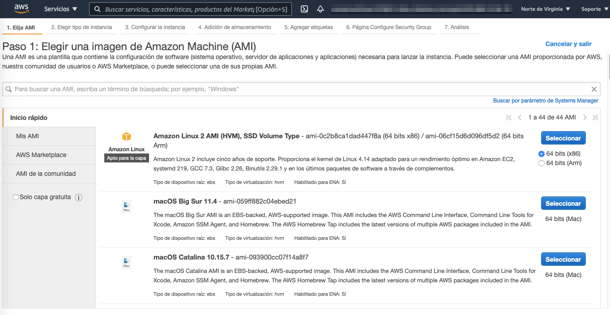

Servicios de computación en AWS¶
Introducción¶
Los servicios de máquinas virtuales fueron los primeros servicios tanto de AWS como de Azure, los cuales proporcionan infraestructura como servicio (IaaS). Posteriormente se añadieron otros servicios como tecnología sin servidor (serverless), tecnología basada en contenedores y plataforma como servicio (PaaS).
Ya hemos comentado el coste de ejecutar servidores in-house (compra, mantenimiento del centro de datos, personal, etc...) además de la posibilidad de que la capacidad del servidor podría permanecer sin uso e inactiva durante gran parte del tiempo de ejecución de los servidores, lo que implica un desperdicio.
Amazon EC2¶
Amazon Elastic Compute Cloud (Amazon EC2 - https://docs.aws.amazon.com/ec2/) proporciona máquinas virtuales en las que podemos alojar el mismo tipo de aplicaciones que podríamos ejecutar en un servidor en nuestras oficinas. Además, ofrece capacidad de cómputo segura y de tamaño ajustable en la nube. Las instancias EC2 admiten distintas cargas de trabajo (servidores de aplicaciones, web, de base de datos, de correo, multimedia, de archivos, etc..)
La computación elástica (Elastic Compute) se refiere a la capacidad para aumentar o reducir fácilmente la cantidad de servidores que ejecutan una aplicación de manera automática, así como para aumentar o reducir la capacidad de procesamiento (CPU), memoria RAM o almacenamiento de los servidores existentes.
La primera vez que lancemos una instancia de Amazon EC2, utilizaremos el asistente de lanzamiento de instancias de la consola de administración de AWS, el cual nos facilita paso a paso la configuración y creación de nuestra máquina virtual.
Paso 1: AMI¶
Una imagen de Amazon Machine (AMI) proporciona la información necesaria para lanzar una instancia EC2. Así pues, el primer paso consiste en elegir cual será la AMI de nuestra instancia. Por ejemplo, una AMI que contenga un servidor de aplicaciones y otra que contenga un servidor de base de datos.
Si vamos a montar un cluster, también podemos lanzar varias instancias a partir de una sola AMI.

Las AMI incluyen los siguientes componentes:
- Una plantilla para el volumen raíz de la instancia, el cual contiene un sistema operativo y todo lo que se instaló en él (aplicaciones, librerías, etc.). Amazon EC2 copia la plantilla en el volumen raíz de una instancia EC2 nueva y, a continuación, la inicia.
- Permisos de lanzamiento que controlan qué cuentas de AWS pueden usar la AMI.
- La asignación de dispositivos de bloques que especifica los volúmenes que deben asociarse a la instancia en su lanzamiento, si corresponde.
Tipos de AMI¶
Puede elegir entre los siguientes tipos de AMI:
- Quick Start: AWS ofrece una serie de AMI prediseñadas, tanto Linux como Windows, para lanzar las instancias.
- Mis AMI: estas son las AMI que hemos creado nosotros.
- AWS Marketplace: catálogo que incluye miles de soluciones de software creadas por empresas terceras. Estas AMI pueden ofrecer casos de uso específicos para que pueda ponerse en marcha rápidamente.
- AMI de la comunidad: estas son AMI creadas por personas de todo el mundo.AWS no controla estas AMI, así que deben utilizarse bajo la propia responsabilidad, evitando su uso en entornos corporativos o de producción.
Las AMI se crean a partir de una instancia EC2. Si queremos crear una AMI propia, podemos importar una máquina virtual para que se convierta en una instancia EC2 y, luego guardar la instancia EC2 como una AMI. O partir de una AMI existente, modificarla conforme a nuestras necesidades y luego crear la nueva AMI.
Las AMI dependen de la región
Las AMI que creamos se hacen en la región en la que estamos conectados. Si la necesitamos en otra región, debemos realizar un proceso de copia.
Paso 2: Tipo de instancias¶
El segundo paso es seleccionar un tipo de instancia, según nuestro caso de uso. Los tipos de instancia incluyen diversas combinaciones de capacidad de CPU, memoria, almacenamiento y red.

Cada tipo de instancia se ofrece en uno o más tamaños, lo cual permite escalar los recursos en función de los requisitos de la carga de trabajo de destino.
Categorías¶
Las categorías de tipos de instancia incluyen instancias de uso general, optimizadas para informática, optimizadas para memoria, optimizadas para almacenamiento y de informática acelerada.
| Categoría | Tipo de instancia | Caso de uso |
|---|---|---|
| Uso general | a1, m4, m5, t2, t3 | Amplio |
| Computación | c4, c5 | Alto rendimiento |
| Memoria | r4, r5, x1, z1 | Big Data |
| Informática acelerada | f1, g3, g4, p2, p3 | Machine Learning |
| Almacenamiento | d2, h1, i3 | Sistemas de archivos distribuidos |
Tipos de instancias¶
Los tipos de instancias (https://aws.amazon.com/es/ec2/instance-types/) ofrecen familias, generaciones y tamaños. Así pues, el tipo de instancia t3.large referencia a la familia T, de la tercera generación y con un tamaño large.
En general, los tipos de instancia que son de una generación superior son más potentes y ofrecen una mejor relación calidad/precio.
Comparando tipos de instancias
Cuando se comparan los tamaños hay que examinar la parte del coeficiente en la categoría de tamaño. Por ejemplo, una instancia t3.2xlarge tiene el doble de CPU virtual y memoria que una t3.xlarge. A su vez, la instancia t3.xlarge tiene el doble de CPU virtual y memoria que una t3.large.
También se debe tener en cuenta que el ancho de banda de red también está vinculado al tamaño de la instancia de Amazon EC2. Si ejecutará trabajos que requieren un uso muy intensivo de la red, es posible que deba aumentar las especificaciones de la instancia para que satisfaga sus necesidades.
Paso 3: Configuración de la instancia / red¶

Después de elegir una AMI y un tipo de instancia, debe especificar la ubicación de red en la que se implementará la instancia EC2. Debe seleccionar la región antes de iniciar el asistente de lanzamiento de instancias. Compruebe que se encuentra en la página de la región correcta de la consola de Amazon EC2 antes de elegir Launch Instance (Lanzar instancia). Cuando se lanza una instancia en una VPC predeterminada, AWS le asigna una dirección IP pública de forma predeterminada. Cuando se lanza una instancia en una VPC no predeterminada, la subred tiene un atributo que determina si las instancias lanzadas en esa subred reciben una dirección IP pública del grupo de direcciones IPv4 públicas. De forma predeterminada, AWS no asignará una dirección IP pública a las instancias que se lancen en una subred no predeterminada. Puede controlar si la instancia recibe una dirección IP pública mediante la modificación del atributo de asignación de direcciones IP públicas de la subred o a través de la habilitación o la deshabilitaciónde la asignación de direcciones IP públicas durante el lanzamiento (lo cual anula el atributo de direcciones IP públicas de la subred). 28
Asociar un rol de IAM¶
Es habitual que se utilicen instancias EC2 para ejecutar una aplicación que debe realizar llamadas seguras de la API a otros servicios de AWS. Para respaldar estos casos de uso, AWS le permite asociar un rol de AWS Identity and Access Management (IAM) a una instancia EC2. Sin esta característica, podría verse tentado a colocar credenciales de AWS en una instancia EC2 para que las utilice una aplicación que se ejecute en dicha instancia. Sin embargo, nunca debe almacenar las credenciales de AWS en una instancia EC2. Es muy inseguro. En su lugar, asocie un rol de IAM a la instancia EC2. El rol de IAM concede permiso a las aplicaciones que se ejecutan en la instancia EC2 para realizar solicitudes de interfaz de programación de aplicaciones (API).Un perfil de instancia es un contenedor para un rol de IAM. Si utiliza la consola de administración de AWS con el fin de crear un rol para Amazon EC2, la consola creará un perfil de instancia automáticamente y le otorgará el mismo nombre que al rol. Luego, cuando utilice la consola de Amazon EC2 con el fin de lanzar una instancia con un rol de IAM, podrá seleccionar un rol para asociarlo a la instancia. En la consola, la lista que se muestra es, en realidad, una lista de nombres de perfiles de instancia. 29
En el ejemplo, verá que se utiliza un rol de IAM para conceder permisos a una aplicación que se ejecuta en una instancia EC2. La aplicación debe obtener acceso a un bucket en Amazon S3.Puede asociar un rol de IAM al momento de lanzar la instancia o puede asociarlo a una instancia EC2 que ya se esté ejecutando. Cuando define un rol que una instancia EC2 puede utilizar, determina qué cuentas o servicios de AWS pueden asumir el rol. También define qué acciones y recursos de la API puede utilizar la aplicación después de asumir el rol. Si cambia un rol, el cambio se extiende a todas las instancias que tengan el rol asociado.
Script de datos de usuario¶
Al momento de crear las instancias EC2, tiene la opción de transferir los datos de usuario a la instancia. Los datos de usuario pueden automatizar la finalización de las instalaciones y las configuraciones durante el lanzamiento de la instancia. Por ejemplo, un script de datos de usuario podría colocar parches en el sistema operativo de la instancia y actualizarlo, recuperar e instalar claves de licencia de software, o instalar sistemas de software adicionales. En el script de datos de usuario de ejemplo, verá un script de shellde LinuxBashsencillo de tres líneas. La primera línea indica que el shellde Bashdebe ejecutar el script. La segunda línea invoca la utilidad YellowdogUpdater, Modified(YUM), que se suele utilizar en muchas distribuciones de Linux, como Amazon Linux, CentOSy Red HatLinux, para recuperar software de un repositorio en línea e instalarlo. En la segunda línea del ejemplo, ese comando indica a YUM que actualice todos los paquetes instalados a las versiones más recientes conocidas para el repositorio de software al que esté configurado para acceder. En la tercera línea del script, se indica que se debe instalar la utilidad Wget. Wgetes una utilidad común para descargar archivos desde la Web.Para una instancia de Windows, el script de datos de usuario debe escribirse en un formato que sea compatible con una ventana del símbolo del sistema (comandos por lotes) o con Windows PowerShell. Para obtener más información, consulte Scripts de datos de usuario de Windowsen la documentación. 31
Cuando se cree la instancia EC2,el script de datos de usuario se ejecutará con privilegios raíz durante las fases finales del proceso de arranque. En las instancias de Linux, se ejecuta a través del servicio cloud-init. En las instancias de Windows, se ejecuta mediante la utilidad EC2Config o EC2Launch. De forma predeterminada, los datos de usuario solo se ejecutan la primera vez que se inicia la instancia. Sin embargo, si desea que su script de datos de usuario se ejecute cada vez que arranca la instancia, puede crear unscript de datos de usuario de archivo multipartecon el formato MultipurposeInternet Mail Extensions(MIME). Este proceso no suele realizarse. 32
Almacenamiento¶
Cuando lance una instancia EC2, podrá configurar las opciones de almacenamiento. Por ejemplo, puede configurar el tamaño del volumen raíz en el que está instalado el sistema operativo invitado. También puede asociar volúmenes de almacenamiento adicionales cuando lance la instancia. Algunas AMI también están configuradas para lanzar más de un volumen de almacenamiento de forma predeterminada y, de esa manera, proporcionar almacenamiento independiente del volumen raíz. Para cada volumen que tenga la instancia, puede especificar el tamaño de los discos, los tipos de volumen y si el almacenamiento se conservará en el caso de terminación de la instancia. También puede especificar si se debe utilizar el cifrado. 33
Amazon ElasticBlock Store (Amazon EBS) es un servicio de almacenamiento en bloque duradero, de alto rendimiento y fácil de usar que está diseñado para utilizarse con Amazon EC2 para las cargas de trabajo con un uso intensivo de transacciones y de rendimiento. Con Amazon EBS, puede elegir entre cuatro tipos de volumen diferentes para equilibrar el precio y el rendimiento óptimos. Puede cambiar los tipos de volumen o aumentar su tamaño sin interrumpir sus aplicaciones críticas, de modo que disponga de almacenamiento rentable cuando lo necesite.El almacén de instancias de Amazon EC2 ofrece almacenamiento a nivel de bloque temporal para su instancia. Este almacenamiento está ubicado en los discos que se asocian físicamente al equipo de alojamiento. El almacén de instancias es una buena opción para el almacenamiento temporal de información que cambia con frecuencia, como buffers, memorias caché, datos de pruebas y demás contenido temporal. También puede utilizar el almacén de instancias para los datos que se replican en una flota de instancias, como un grupo de servidores web con balanceo de carga. Si las instancias se detienen, ya sea debido a un error del usuario o un problema de funcionamiento, se eliminarán los datos en el almacén de instancias.AmazonElasticFileSystem(AmazonEFS)suministra un sistema de archivos 34
Network File System(NFS) simple, escalable, elástico y totalmente administrado para utilizar con los servicios en la nube de AWS y con los recursos en las instalaciones. Está diseñado para escalar a petabytesbajo demanda sin interrumpir las aplicaciones. Se expande y se reduce automáticamente a medida que agrega y elimina archivos, lo que reduce la necesidad de aprovisionar y administrar la capacidad para adaptarse al crecimiento.Amazon Simple Storage Service(Amazon S3)es un servicio de almacenamiento de objetos que ofrece escalabilidad, disponibilidad de datos, seguridad y rendimiento. Puede almacenar y proteger cualquier cantidad de datos para diversos casos de uso, como sitios web, aplicaciones móviles, procesos de copia de seguridad y restauración, archivo, aplicaciones empresariales, dispositivos de Internet de las cosas (IoT) y análisis de bigdata. 35
Etiquetas¶
Las etiquetas son marcas que se asignan a los recursos de AWS. Cada etiqueta está formada por unaclavey un valoropcional que usted mismo define. Las etiquetas le permiten clasificar los recursos de AWS, como las instancias EC2, de diferentes maneras. Por ejemplo, puede etiquetar las instancias en función de la finalidad, el propietario o el entorno.El etiquetado es la forma en que asocia metadatos a una instancia EC2. Las claves y los valores de las etiquetas distinguen entre mayúsculas y minúsculas. Por ejemplo, una etiqueta que suele utilizarse para instancias EC2 es una clave de etiqueta denominada Name(Nombre) y un valor de etiqueta que describe la instancia, como MyWeb Server (Mi servidor web). La etiqueta Namese expone de forma predeterminada en la página Instances(Instancias) de la consola de Amazon EC2. Sin embargo, si crea una clave denominada name(con nminúscula), no aparecerá en la columna Namede la lista de instancias, aunque seguirá apareciendo en el panel de detalles de la instancia en la pestaña Tags(Etiquetas).Se recomienda desarrollar estrategias de etiquetado. Si utiliza un conjunto uniforme de claves de etiquetas, será más fácil administrar los recursos. También puede buscar y filtrar los recursos en función de las etiquetas que agregue. 38
Grupo de seguridad¶
Ungrupo de seguridad funciona como un firewall virtual que controla el tráfico de red de una o más instancias. Cuando lance una instancia, puede especificar uno o más grupos de seguridad; de lo contrario, se utiliza el grupo de seguridad predeterminado. Puede agregar reglasa cada grupo de seguridad. Las reglas habilitan el tráfico hacia o desde sus instancias asociadas. Las reglas de un grupo de seguridad se pueden modificar en cualquier momento, y las reglas nuevas se aplicarán automáticamente a todas las instancias que estén asociadas al grupo de seguridad. AWS evalúa las reglas de todos los grupos de seguridad asociados a una instancia para decidir si permite que el tráfico llegue a ella. Si desea lanzar una instancia en una nube virtual privada (VPC), debe crear un grupo de seguridad nuevo o utilizar uno que ya exista en esa VPC. Una vez lanzada la instancia, puede cambiar sus grupos de seguridad. Cuando defina una regla, puede especificar el origen de la comunicación de red (reglas de entrada) o su destino (reglas de salida) admitidos. El origenpuede ser una dirección IP, un intervalo de direcciones IP, otro grupo de seguridad, un punto de enlace de la VPC de gatewayo cualquier lugar (lo que significa que se permitirán todos los orígenes). De forma predeterminada, los grupos de seguridadincluyen 39
una regla de salidaque permite todo el tráfico saliente. Es posible quitar esta reglay agregar reglas de salidaque solo permitan tráfico salienteespecífico. Si el grupo de seguridadno tiene reglas de salida, no se permitirá el tráfico salienteque proceda de su instancia.En la regla de ejemplo, se permite el tráfico con el protocolo SecureShell (SSH) a través del puerto 22 del protocolo de control de transmisión (TCP) si el origen de la solicitud es MyIP (Mi IP). La dirección IP de MyIP se calcula determinando la dirección IP desde la que se conecta a la nube de AWS en el momento de definir la regla. Las listas de control de acceso a la red (ACL de red) también se pueden utilizar como firewalls para proteger las subredes en una VPC. 40
Identificación¶
Después de especificar todas las configuraciones necesarias para lanzar una instancia EC2 y luego de personalizar cualquier configuración opcional del asistente de lanzamiento de EC2, verá la ventana ReviewInstanceLaunch(Revisar lanzamiento de instancia). Si elige Launch(Lanzar), aparecerá un cuadro de diálogo donde se solicita que elija un par de claves existente, continúe sin un par de claves o cree un par de claves nuevo antes de seleccionar LaunchInstances(Lanzar instancias) y crear la instancia EC2.Amazon EC2 utiliza la criptografía de clave pública para cifrar y descifrar la información de inicio de sesión. Esta tecnología utiliza una clave públicapara cifrar los datos; a continuación, el destinatario utiliza la clave privada para descifrarlos. Las claves públicas y privadas constituyen un par de claves. La criptografía de clave pública le permite acceder de forma segura a las instancias a través de la clave privada en lugar de una contraseña.Al momento de lanzar una instancia, debe especificar el par de claves. Puede optar por un par de claves existente o uno nuevo que cree durante el lanzamiento. Si crea uno nuevo, descárguelo y guárdelo en un lugar seguro. Esta es la única oportunidad de guardar el archivo de clave privada.
Si desea conectarse auna instancia de Windows, utilice la clave privada para obtener la contraseña del administrador e inicie sesión en el escritorio de Windows de la instancia EC2 con el protocolo de escritorio remoto (RDP). Para establecer una conexión SSH desdeun equipo Windows a una instancia de Amazon EC2, puede utilizar una herramienta, como PuTTY, que requerirá la misma clave privada.Con las instancias de Linuxen el momento del arranque, el contenido de la clave pública se coloca en la instancia. Secrea una entrada en~/.ssh/authorized_keys. Para iniciar sesión en la instancia de Linux (por ejemplo, con el protocolo SSH), debe proporcionar la clave privada al momento de establecer la conexión. 42
Después de elegir LaunchInstances(Lanzar instancias) y seleccionar View Instances(Ver instancias), aparecerá una pantalla similar a la del ejemplo. Muchos de los ajustes especificados durante el lanzamiento están visibles en el panel Description(Descripción). La información acerca de la instancia disponible incluye detalles sobre la dirección IP y la dirección DNS, el tipo de instancia, el ID de instancia único asignado a la instancia, el ID de la AMI que utilizó para lanzar la instancia, el ID de la VPC, el ID de la subred, etc. Muchos de estos detalles proporcionan hipervínculos que puede seleccionar para obtener más información acerca de los recursos pertinentes para la instancia EC2 que lanzó. 43
Uso de la consola¶
También puede lanzar instancias EC2 mediante programación, ya sea a través de la interfaz de línea de comandos de AWS (CLI de AWS) o uno de los kits de desarrollo de software (SDK) de AWS.En el comando de la CLI de AWS de ejemplo, verá un solo comando que especifica la información mínima necesaria para lanzar una instancia. El comando incluye la siguiente información:•aws: especifica la invocación de la utilidad de línea de comandos aws.•ec2: especifica la invocación del comando del servicioec2.•run-instances: es el subcomando que se invoca.El resto del comando especifica varios parámetros, entre los que se incluyen los siguientes:•image-id: este parámetro va seguido de un ID de AMI. Todas las AMI tienen un ID de único.•count: puede especificar más de una instancia. •instance-type: puede especificar el tipo de instancia que se creará, como una instancia c3.large.•key-name: en el ejemplo, supongamos que MyKeyPairya existe.•security-groups: en este ejemplo, supongamos que MySecurityGroupya existe.•region: las AMI se encuentran en una región de AWS, por lo que debe especificar la región donde la CLI de AWS encontrará la AMI y lanzará la instancia EC2. 44 El comando debería crear la instancia EC2 correctamente si suceden los siguientes supuestos:•El comando tiene el formato correcto.•Los recursos que el comando necesita ya existen.•Cuenta con los permisos necesarios para ejecutar el comando.•Tiene capacidad suficiente en la cuenta de AWS.Si el comando se ejecuta correctamente, la API responde al comando con el ID de la instancia y otros datos importantes para que la aplicación los utilice en las solicitudes a la API posteriores. 45
Ciclo de vida de las instancias¶
Este es el ciclo de vida de una instancia. Las flechas muestran las accionesque puede realizar, y las casillas indican el estadoque tendrá la instancia después de dicha acción. Las instancias pueden tener uno de los siguientes estados:•Pending(pendiente): cuando se lanza una instancia por primera vez desde una AMI o cuando se activa una instancia detenida, esta pasa al estado pendingcuando arranca y se implementa en un equipo de alojamiento. El tipo de instancia que especificó durante el lanzamiento determinará el hardware del equipo de alojamiento para la instancia.•Running(en ejecución): cuando ya arrancó la instancia por completo y está lista, sale del estado pendingy pasa al estado running. Puede conectarse a través de Internet a la instancia en ejecución. •Rebooting(reiniciada): AWS recomienda reiniciar las instancias con la consola de Amazon EC2, la CLI de AWS o los SDK de AWS, en lugar de invocar una acción de reinicio desde el sistema operativo invitado. Una instancia reiniciada permanece en el mismo host físico, mantiene el mismo nombre DNS público y la misma dirección IP pública y, si tiene volúmenes del almacén de instancias, conserva los datos en ellos.•Shuttingdown(en proceso de cierre):este es un estado intermedio entre running y terminated. •Terminated(terminada): las instancias terminadas permanecen visibles en la consola de Amazon EC2 durante un tiempo antes de que se elimine la máquina virtual. Sin embargo, no es posible conectarse a una instancia terminada ni recuperarla. •Stopping(en proceso de detención): las instancias que cuentan con el respaldo de Amazon EBS se pueden detener. Entran en el estado stoppingantes de alcanzar el estado stoppedpor completo.•Stopped(detenida):una instancia en el estado stoppedno generará los mismos costos que una instancia en el estado running. Si se inicia una instancia en el estado stopped, esta vuelve al estado pendingy se traslada a una nueva máquina de alojamiento. 47
Algunas instancias que cuentan con el respaldo de Amazon EBS admiten la hibernación. Cuando pone una instancia a hibernar, el sistema operativo invitado guarda el contenido de la memoria de la instancia (RAM) en el volumen raíz de Amazon EBS. Cuando reinicie la instancia, el volumen raíz se restaurará al estado anterior, se volverá a cargar el contenido de la RAM y se reanudarán los procesos que estaban en ejecución anteriormente en la instancia.Solo algunas AMI de Linux que cuentan con el respaldo de Amazon EBS y determinados tipos de instancias admiten la hibernación. La hibernación también requiere el cifrado del volumen raíz de EBS. Además, se debe habilitar la hibernación con el lanzamiento inicial de la instancia. No puede habilitarla en una instancia existente que no tenía habilitada esta función originalmente. Para obtener más información sobre los requisitos previos y el costo, consulte Hiberne su instancia de Linuxen la página de documentación de AWS. 48 De manera predeterminada, todas las cuentas de AWS están limitadas a cinco (5) direcciones IP elásticas por región porque las direcciones públicas de Internet (IPv4) son un recurso público escaso. Sin embargo, este límite no es fijo, y se puede solicitar un aumento del límite (que podría aprobarse). 50
Metadatos de las instancias¶
Los metadatos de la instancia son datos sobre la instancia. Puede verlos mientras esté conectado a la instancia. Para acceder a ellos en un navegador, diríjase a la siguiente dirección URL: http://169.254.169.254/latest/meta-data/. También puede leer los datos mediante programación, por ejemplo, desde una ventana de terminal que tenga la utilidad cURL. En la ventana de terminal, ejecute cURLhttp://169.254.169.254/latest/meta-data/para recuperarlos. La dirección IP 169.254.169.254es una dirección de enlace local y solo es válida desde la instancia. Los metadatos de la instancia proporcionan en general la misma información acerca de la instancia en ejecución que puede encontrar en la consola de administración de AWS. Por ejemplo, puede conocer la dirección IP pública, la dirección IP privada, el nombre de host público, el ID de la instancia, los grupos de seguridad, la región, la zona de disponibilidad y mucho más. También se puede acceder a todos los datos de usuario especificados durante el lanzamiento de la instancia en la siguiente dirección URL: http://169.254.169.254/latest/user-data.Los metadatos de instancias EC2 se pueden utilizar para configurar o administrar una instancia en ejecución. Por ejemplo, puede crear un script de configuración que tenga acceso a la información de metadatos y la utilice para configurar las aplicaciones o el sistema operativo. 51
IPs estáticas
Una dirección IP públicaes una dirección IPv4 a la que se puede acceder desde Internet. A cada instancia que recibe una dirección IP pública se le asigna también un nombre de host DNS externo. Por ejemplo, si la dirección IP pública asignada a la instancia es 203.0.113.25, el nombre de host DNS externo podría serec2-203-0-113-25.compute-1.amazonaws.com.Si especifica que se debe asignar una dirección IP pública a la instancia, esta se asigna desde el grupo de direcciones IPv4 públicas de AWS. La dirección IP pública no está asociada a su cuenta de AWS. Cuando se desvincula una dirección IP pública de la instancia, se vuelve a liberar en el grupo de direcciones IPv4 públicas, y no podrá indicar que desea volver a utilizarla. AWS libera la dirección IP pública de la instancia cuando la instancia se detiene o se termina. La instancia detenida recibe una dirección IP pública nueva cuando se reinicia.Si necesita una dirección IP pública permanente, le recomendamos asociar una dirección IP elástica a la instancia. Para hacerlo, primero debe asignar una nueva dirección IP elástica en la región donde se encuentra la instancia. Una vez asignada, puede asociar la dirección IP elástica a una instancia EC2. 49
Monitorización¶
Puede monitorear las instancias con Amazon CloudWatch, el cual recopila y procesa los datos sin formato de Amazon EC2, y los convierte en métricas legibles casi en tiempo real. Estas estadísticas se registran durante un periodo de 15meses, de forma que pueda acceder a la información histórica y obtener una mejor perspectiva acerca del rendimiento de su servicio o aplicación web.De forma predeterminada, Amazon EC2 proporciona un monitoreo básico,que envía datos de métricas a CloudWatchen intervalos de 5minutos. Para enviar los datos de las métricas de la instancia a CloudWatchcada 1minuto, puede habilitar el monitoreo detalladoen la instancia. Para obtener más información, consulte Habilitar o deshabilitar el monitoreo detallado de las instancias.La consola de Amazon EC2 muestra una serie de gráficos basados en los datos sin procesar de Amazon CloudWatch. En función de sus necesidades, es posible que prefiera obtener los datos para las instancias de Amazon CloudWatch, en lugar de los gráficos en la consola. De forma predeterminada, Amazon CloudWatchno proporciona métricas de la RAM para las instancias EC2, pero puede configurar esta opción si desea que Cloud Watch recopile esos datos. 52
RESUMEN •Las instancias EC2 se lanzan desde una plantilla de AMI en una VPC de su cuenta.•Puede elegir entre muchos tipos de instancias. Cada tipo de instancia ofrece diferentes combinaciones de capacidades de CPU, RAM, almacenamiento y redes.•Puede configurar grupos de seguridad para controlar el acceso a las instancias (especificar el origen y los puertos permitidos).•Los datos de usuario le permiten especificar un script que se ejecutará la primera vez que se lance una instancia. •Solo se pueden detener las instancias que cuentan con el respaldo de Amazon EBS. •Puede utilizar Amazon CloudWatch para capturar y revisar métricas en instancias EC2.
Optimización de costes¶
AWS ofrece diferentes tipos de instancia
Los modelos de precios de Amazon EC2 incluyen instancias bajo demanda, instancias reservadas, instancias de spot, instancias dedicadas y hosts dedicados. La facturación por segundo está disponible para las instancias bajo demanda, las instancias reservadas y las instancias de spot que solo utilizan Amazon Linux y Ubuntu.
Las instancias de spot se pueden interrumpir con una notificación de 2 minutos. Sin embargo, pueden significar un ahorro considerable en comparación con las instancias bajo demanda.
Los cuatro pilares de la optimización de costws son:
- Adaptación del tamaño
- Aumento de la elasticidad
- Modelo de precios óptimo
- Optimización de las opciones de almacenamiento
Servicios de contenendores¶
Los contenedores pueden abarcar todo lo que una aplicación necesita para ejecutarse. Docker es una plataforma de software que empaqueta software en contenedores.
Una sola aplicación puede abarcar varios contenedores.
Amazon Elastic Container Service(Amazon ECS) organiza la ejecución de los contenedores de Docker.
Kuberneteses un software de código abierto para la organización de contenedores. Amazon Elastic Kubernetes Service (Amazon EKS) le permite ejecutar Kubernetes en AWS. Amazon Elastic Container Registry (Amazon ECR) le permite almacenar, administrar e implementar sus contenedores de Docker
AWS Lambda¶
La informática sin servidor le permite crear y ejecutar aplicaciones y servicios sin aprovisionar ni administrar servidores. AWS Lambda (https://aws.amazon.com/es/lambda/) es un servicio de informática sin servidor que proporciona las funcionalidades integradas de tolerancia a errores y escalado automático, el cual se factura por el tiempo de ejecución (cantidad de milisegundos por el número de invocaciones a la función). Para ello, permite la ejecución de código en el servidor con soporte para múltiples lenguajes (Java, C#, Python, Go, ...) sin necesidad de configurar una instancia EC2.
Un origen de eventos es un servicio de AWS (S3, DynamoDB, ...) o una aplicación creada por un desarrollador que desencadena la ejecución de una función de Lambda.
Mediante AWS Step Functions se pueden crear flujos de trabajo encandenando llamadas a funciones lambda
Las restricciones más destacables son:
- Permite hasta 1000 ejecuciones simultáneas en una única región.
- La cantidad máxima de memoria que se puede asignar para una sola función Lambda es de 3008 MB.
- El tiempo de ejecución máximo para una función Lambda es de 15 minutos.
AWS Elastic Beanstalk¶
AWS ElasticBeanstalk mejora la productividad de los desarrolladores. Simplifica el proceso de implementación de la aplicación. Reduce la complejidad de administración. ElasticBeanstalkes compatible con Java, .NET, PHP, Node.js, Python, Ruby, Goy Docker. No se aplican cargos por utilizar ElasticBeanstalk. Pague únicamente por los recursos de AWS que utilice.
Actividades¶
- Realizar el módulo 6 (Informática) del curso ACF de AWS.